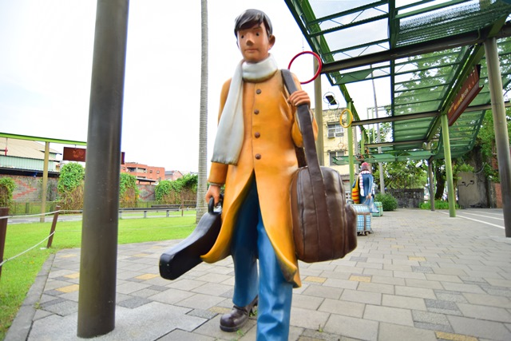
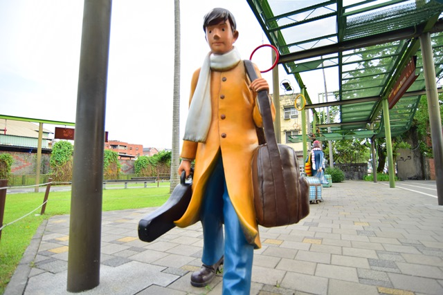

景點介紹
繪本世界真實呈現，全台首座幾米公園
2013年宜蘭旅遊新亮點-幾米公園，由宜蘭縣政府重新規畫鐵路舊宿舍區， 設置成為轉運中心，規畫主題公園結合裝置藝術，打破一般死板板的轉運站印象， 讓等車也可以變得很有趣，並特意保留歷史建築與老樹綠蔭，將原本廢棄不用的空地， 變成了繽紛的藝術公園，就像走入繪本中，探索幾米的繪本世界。 繪本世界真實呈現，全台首座幾米公園
2013年宜蘭旅遊新亮點-幾米公園，由宜蘭縣政府重新規畫鐵路舊宿舍區， 設置成為轉運中心，規畫主題公園結合裝置藝術，打破一般死板板的轉運站印象， 讓等車也可以變得很有趣，並特意保留歷史建築與老樹綠蔭，將原本廢棄不用的空地， 變成了繽紛的藝術公園，就像走入繪本中，探索幾米的繪本世界。 